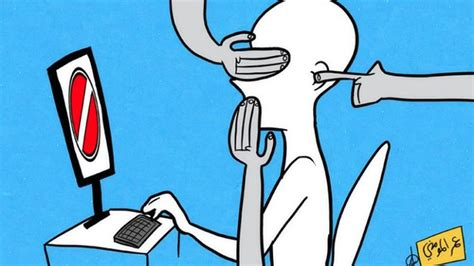

Image Credit: Omar Momani
The Dangers Of Censorship
History has proven that censorship can be dangerous for a society. Today, China censors people who disagree and speak negatively towards the The Chinese Communist Party (CCP). This censorship limits free thought and controls peoples thoughts and beliefs. Censorship can pose serious dangers such as:
- Limits Critical Thinking
- Suppression of Opposing Ideas
- Threatens American Education
-
Being able to read and comment on material that challenges your own beliefs creates a better society and develops
critical thinking skills in children and young adults. Through censoring ideas and truth, social media platforms not only limiting the free exchange of ideas.
but is effectivey deciding what is truth or reality. Having the opportunity to read materials that
represent a wide range of beliefs with differing views ensure that knowledge replaces ignorance and leads to enlightenment.
-
Today it is common to see banning and silencing of people who oppose the ideas of totalitarian governments
such as North Korea, Russia, and China. Its not that the beliefs are false but because they are true is why totalitarian governments seek
so avidly the suppression of free speech. People in these countries, especially North Korea often live controlled lives,
ignorant of other ways of thinking and living and unaware of the deficiencies of their governmentall system. Societies that allow and encourage free thought and opinions
create the most progressive and prosperous environments to live in. As the founding fathers believed, key to any democracy was free speech and a free press, which ensured
that the government would forever be answerable to "We the people". This is why it is so critically important
for social media platforms, even though they may not like the message, allow users to share beliefs and ideas without concern of being censored or banned.
-
In 1967, the Supreme Court ruled in favor of a teacher who was fired for having communist ideas.
The Supreme Court stated that "the classroom is peculiarly the marketplace of ideas". As it was true then, it
is even more true today... social media platforms which are one of todays marketplace of ideas should be free and uncensored.
If users can't express their varying opinions and beliefs then social media platforms effectively deem what is appropriate.